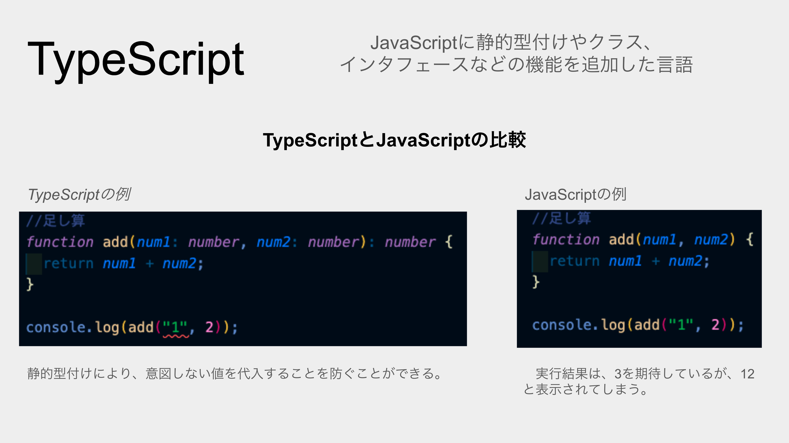
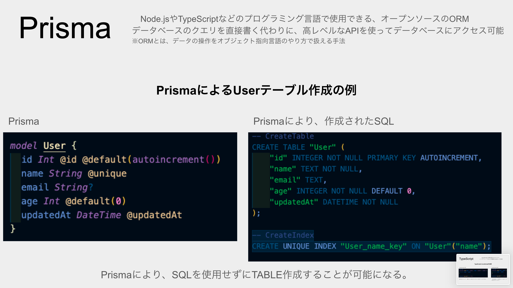
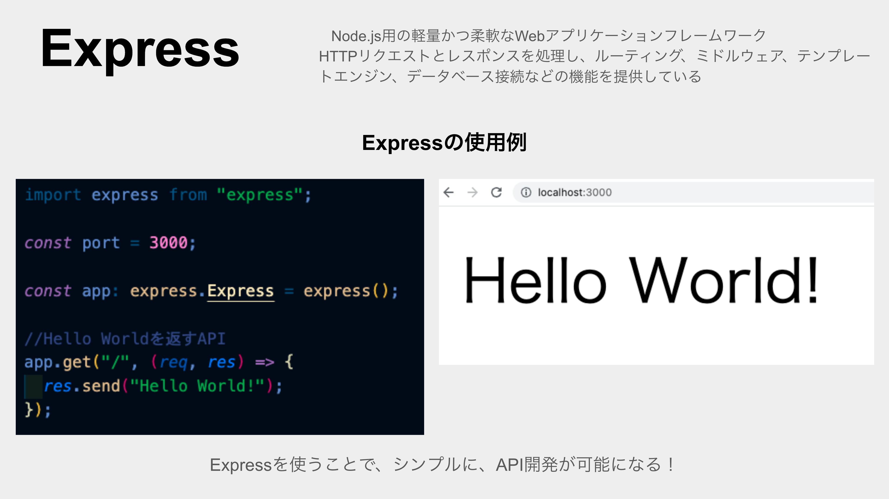
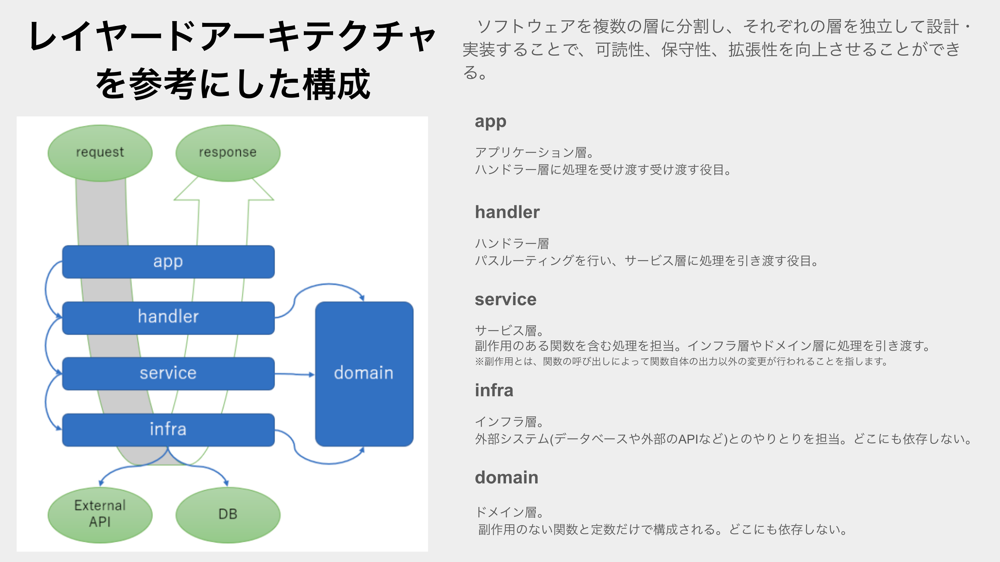
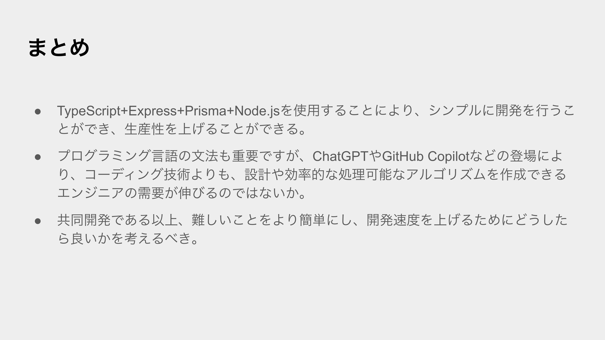

YAPC::Kyoto 2023 #
3/19 に YAPC::Kyoto 2023 に参加してきました。
YAPC::Kyoto 2023 前日祭 #
3/18 には、YAPC::Kyoto 2023 前日祭 に参加しました。
ネコトーストラボ杯争奪 東西対抗 LTマッチ #
「YAPC::Kyoto 2023前日祭」内のイベント「ネコトーストラボ杯争奪 東西対抗 LTマッチ」に、登壇しました。
YAPC::Kyoto 2023 前日祭#yapcjapan
— N Akita (@mini_bg_pro_N) March 23, 2023
ネコトーストラボ杯争奪 東西対抗 LTマッチに登壇しました。
MVPいただき、ありがとうございます。
スライド公開します。
ブログを書くまでがYAPC!!
ということで、ブログは後ほど、書きます。
Perl愛好家の方々、すみません…https://t.co/WCTPZRhiTa
東側チームのMVPを受賞をすることができました。
登壇内容 #
登壇内容は「TypeSciprt + Express + Prisma + Node.js API開発」。入社してから、初業務で学んだことをまとめた内容です。
Perlについて思うこと #
冒頭では、Perlの本音について。 くじ引きで、一番最後の登壇なのでしたが、他の登壇者の発表を聞いた後、このスライドを作ったことを後悔。
Perl愛好家が集まるイベントで、このスライドを発表するのは、空気を壊してしまうのではないかと、発表直前にとても不安になっていた。

TypeScript #
TypeScriptは、JavaScriptの型を導入することで、JavaScriptの開発をより安全に、より効率的に行うことができる言語。

Prisma #
手動でSQLクエリを書く必要ない。SQLを意識せずに、データ操作が可能。

Express #
Node.jsのWebフレームワーク。軽量で、柔軟性が高い。

レイヤードアーキテクチャーを参考にした構成 #
各層を独立して設計しているため、役割が明確になる。Domain層により、コード量を大幅に抑えることが可能。

まとめ #
開発する時には、自分のような初業務の人もいれば、ベテランエンジニア、営業の方など、様々な人がいる。全員が全員、同じような知識を持っているわけではないので、共通の知識を持った上で、開発を進めることが重要だと感じました。

MVP賞 #
#yapcjapan
— N Akita (@mini_bg_pro_N) April 10, 2023
前日祭LTマッチMVPの副賞いただきました。
ありがとうございます。 pic.twitter.com/7kxvukQ0Ot
YAPC::Kyoto 2023:当日 #
当日は、様々なタイムテーブルを回りました。
印象的な登壇内容 #
「マルチテナントの実現における技術選定の審美眼とDB設計 ~ PostgreSQLを添えて ~」 #
登壇を聞けばデータベース設計について理解できた気になるくらい、シンプルでとても説明が分かりやすかった。
ソフトウェアエンジニアリングサバイバルガイド: 廃墟を直す、廃墟を出る、廃墟を壊す、あるいは廃墟に暮らす、廃墟に死す #
ソフトウェアについても現実に存在する「モノ」のように定期的あるいは継続的なメンテナンスが必要であり、メンテナンスを楽にするためには、より簡潔なコーディングをするべきだと感じました。
おわりに #
多様性を受け入れており、誰でも歓迎している感じが、YAPCイベントの良さだと思いました。私は、今回の「YAPC::Kyoto 2023」が、初参加のITカンファレンスで、LTに登壇するのも初めてでした。また、知見を深められ、業務に役に立てられるように感じました。